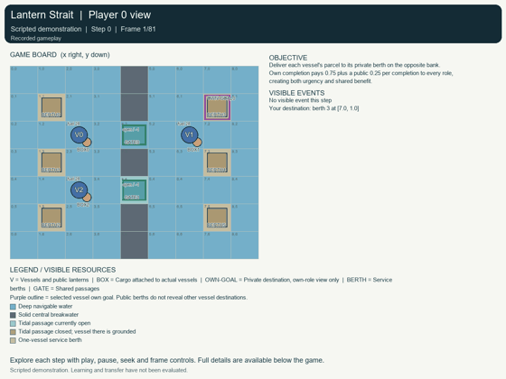
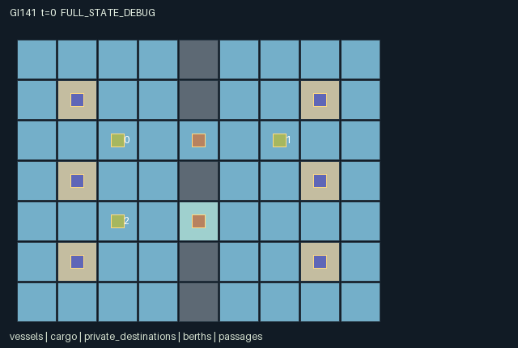

GI141 / SPATIAL
灯火海峡
角色通过方向请求、短期租约与主动让行协调过峡，另一条通道还受潮汐周期限制。
Original saved demonstration
Recorded native state, often authored scripts or interventions; information scope and failures are preserved in the original provenance. This is a saved demonstration, not live browser play.

Release verification episode
Untrained uniform legal actions. Actual JAX state sampled along the full original episode; full-state debug camera. No human performance or learning claim.

Run this game
crucibles play --game 141
Start Python locally, then open the address printed by the terminal. Installation, multiplayer, takeover and keyboard controls →
Objective, rewards & ending
Exact task contract
{
"objective": "Deliver each vessel's parcel to its private berth on the opposite bank. Own completion pays 0.75 plus a public 0.25 per completion to every role, creating both urgency and shared benefit.",
"natural_termination": "All three vessels are resolved (delivered or fuel-stranded), or the 80-step horizon truncates. Service lasts two later transitions. A natural resolution at H has priority.",
"interaction": "Public directional requests allocate short exclusive entrance leases before simultaneous movement. Traffic can block, reserve, yield or strand others. The lower crossing closes for half of each eight-step tide cycle; one-vessel berths retain service occupancy for two steps.",
"observation_access": "All vessel positions, fuel, lantern signals, cargo status, passage reservations, tide, berth occupancy and event flags are public radar data. Only own destination id/position is returned; destination entities have identity visibility. Other private destinations are never displayed in role views. Waiting/servicing/finished/stranded roles retain no-op; only active fueled vessels can issue other commands."
}Declared per-step reward bounds: -1 to 2. Observability: partially_observable.
Rules
- Upper crossing (4,2) is always open; lower crossing (4,4) is open at tide phases 0..3 and closed at phases 4..7.
- Adjacent EAST/WEST requests set public lanterns and seek a three-step entrance lease. Matching side and rotating initiative decide conflicts before movement.
- Unreserved entrances are open to either direction. A lease excludes other entrants; YIELD releases it and departure from the gate also releases it.
- Maneuvers and signals each spend one fuel, including blocked attempts. A grounded vessel must wait for the tide; exhausted vessels remain physical obstacles.
- Only own destination is private. Docking exactly there starts two later steps of service; completed vessels depart and release their berth.
- Own completion is worth 0.75 plus 0.25 shared per completion; working cost is 1/64 per step, collision cost 1/8, new stranding cost 1/2.
Original mechanism document (historical status wording retained)
# Lantern Strait (game-v3-00141)
**Status: AUTHORED_NOT_EXECUTED.** This is an original initial-window train-only source package. Source, scene and literal action scripts are authored hypotheses. No candidate was imported, evaluated, replayed, trained or rendered during authoring. No final-test or earlier candidate/result input was used.
Source SHA-256: `c35f23acaeac5fd11c09e8fe9300c678941be158c5f940cb24f2a330c6321b62`.
Native boundary: A=3, O=168, U=9, H=80; homogeneous scalar int32 actions, float32 flat observations and rewards, fixed-key int32/bool state. Declared observation interval [0, 1], reward interval [-1, 2]. These are representation/game bounds, not empirical acceptance thresholds.
## Harbor geometry, private manifests and visible traffic
Three vessels navigate a 9x7 harbor. A solid breakwater at x=4 separates the basins except for one-cell passages at (4,2) and (4,4). Six one-vessel berths lie at (1,1),(1,3),(1,5),(7,1),(7,3),(7,5). Vessels start at (2,2),(6,2),(2,4) with 28 fuel each and one parcel each. Reset samples an independent berth offset in {0,1,2} for every vessel. Vessels 0/2 have a right-bank destination and vessel 1 a left-bank destination. Two vessels may want the same right-bank berth. The raw-step key is unused.
All vessel positions, fuel, public lantern symbols, signal lifetimes, service, grounding/stranding status, cargo presence, berth occupation, reservations and event flags are public radar data. Only the individual vessel's destination id and position are returned in its self observation. Destination entity visibility is the identity matrix. Public berth geometry is not a disclosure of another vessel's assigned destination. Its eventual successful docking can naturally reveal that destination through the public trajectory.
The upper passage is always physically open. The lower passage opens at t mod 8 in 0..3 and closes at 4..7. Movement uses the input state's tide. After the step, the new clock updates the map and grounding flag. A vessel that remains on (4,4) as phase 4 begins is grounded and cannot maneuver until an open state returns; it may wait or signal. Entering a closed tidal passage is blocked. There is no invented continuous water physics.
## Signals, reservations, movement and docking order
An active, fueled vessel outside service can choose all nine actions. Other roles have only wait. Invalid or currently masked commands become wait. Movement and signal actions each spend one fuel, even if a maneuver is blocked or a request fails. Wait and docking spend no fuel. Action 0 remains available for every role, including completed or stranded ones.
First, existing service, signal and lease timers count down. A service that reaches zero delivers the parcel and removes the completed vessel as a physical obstacle. A signal expires to neutral. EAST and WEST signals set symbol 1/2 with a four-step signal lifetime; YIELD sets symbol 3 for two steps and releases the vessel's lease. Signal lifetime is distinct from the passage lease lifetime.
Requests resolve before movement. EAST can request a passage from its immediate left approach (x=3 on that passage row), and WEST from its immediate right approach (x=5). The passage must be open and unoccupied. A free passage is allocated by rotating priority (id-t) mod 3; an existing owner alone may renew it. Grant/renewal sets lease_ttl to three. Other vessels cannot enter a leased cell even if the owner waits or diverts, creating a real time-limited scarce opportunity. An unreserved passage can be entered from either side. Exiting its cell releases an owner's lease.
Maneuvers then resolve simultaneously using the new reservations but the input tide. Border, breakwater, lease, grounding or physical-occupancy conflicts keep the vessel stationary. No vessel may enter another physically present vessel's old cell, even if it moves away; swaps and following are blocked. Shared empty-target movements are all rejected. Finished vessels are absent; fuel-stranded vessels remain active physical obstructions and may block an entrance or berth.
DOCK at the exact private destination and a free berth starts service=2, berth_timer=2 and berth_owner=i. Two later transitions count this down. During service the vessel is stationary and can only wait. Its completion releases the berth and its collision occupancy before new moves in that transition. Running out of fuel outside service marks a vessel stranded and loses its parcel; it remains an obstacle rather than teleporting away.
## Payoffs, temporal choices and alternatives
Each completed parcel gives 0.25 to every role and another 0.75 to its owner. Every unresolved, nonstranded role pays 1/64 per transition, including service. A movement collision costs that role 1/8; a new fuel stranding costs it 1/2. At most three completions occur together, so each returned reward lies within the declared [-1,2] interval. When all vessels are delivered or stranded, the episode terminates naturally. Otherwise t=80 truncates. Missing a tide or blocking traffic can therefore hurt another role's opportunities and shared reward as well as one's own cost.
A vessel may request a short lease to protect an entrance, yield so an opposing vessel clears a constrained route first, or attempt an unreserved opportunistic crossing. Requesting uses fuel and a step; holding a lease while diverting delays others and may earn no personal progress. An always-open route avoids grounding but may create a queue; the lower route can bypass competition if timed before closure. Shared destinations create berth/service conflicts in addition to passage conflicts.
Public EAST/WEST/YIELD symbols permit a coordination convention, but they are not orders the other agents must obey. Requests have concrete gate effects only at matching approaches; elsewhere a lantern remains public information at a fuel cost. The intended policies and conventions are hypotheses, not evidence of learned communication, strategic optimality or meta-RL transfer.
## Declared invariants and boundedness
- Vessel positions remain in the rectangular world and distinct among physically active vessels. A finished vessel is inactive; a stranded vessel remains active and blocks its actual cell.
- Fuel stays in 0..28. Service/berth timers stay in 0..2, signal lifetime in 0..4 and lease lifetime in 0..3.
- Each berth has at most one serving vessel, with matching berth owner/timer and service state. Serving vessels have only wait and release occupancy on completion.
- Each gate lease is unowned or assigned to one of the three vessels. A lease may expire without use; it never creates a second gate or an out-of-map route.
- A parcel is aboard, delivered or lost. Its public position follows the real vessel endpoint; active cargo excludes completed/stranded parcels.
- Native private goal data consists only of the observing vessel's assigned id and position. The corresponding entity visibility is diagonal; other per-role scene views must not infer hidden assignments from the state.
- Physical gate_open and the public tile map are derived from the same current clock used to identify grounding.
- These are source declarations for later independent checks, not a numerical replay report.
Prospective variants could change channel geometry, tide periods, lease duration, destination demand or public/private signal access. They would change queueing and information dependencies and require new source identities and a prospective evaluation protocol. This package contains only the stated fixed rules and reset destination distribution.
## Exact action legend
- 0: Wait or remain in service.
- 1: Attempt northward maneuver.
- 2: Attempt eastward maneuver.
- 3: Attempt southward maneuver.
- 4: Attempt westward maneuver.
- 5: Broadcast EAST and request an adjacent eastbound passage.
- 6: Broadcast WEST and request an adjacent westbound passage.
- 7: Broadcast YIELD and release own reservation.
- 8: Start service at own private destination berth.
## Native observation columns
- [0:4), self: Self: id/4,private destination berth id/8,private goal x/16,y/16.
- [4:6), public: Public clock t/128 and tide phase/8.
- [6:33), public: Three public vessel records, stride 9: x/16,y/16,fuel/32,signal/4,signal_ttl/4,service/4,finished,stranded,grounded.
- [33:45), public: Three public cargo records, stride 4: x/16,y/16,status/4,active.
- [45:69), public: Six public berth records, stride 4: x/16,y/16,(owner+1)/4,timer/4.
- [69:79), public: Two public passage records, stride 5: x/16,y/16,(lease_owner+1)/4,lease_ttl/4,open.
- [79:102), public: Public flags: reservation[2],blocked[3],collision[3],entered[3],dock[3],completed[3],stranded[3],grounding[3].
- [102:165), public: Public 7x9 physical water/breakwater/berth map, y-major tile value/4.
- [165:168), padding: Three constant zeros.
The renderer binds only these real state groups, positions, active masks and role visibility masks. Glyphs and inert colors carry no extra rule. A carried object shares the actual carrier endpoint; flight, growth, support changes, leases and service are real state transitions. Frame interpolation is presentation only and must not invent a catch, handoff, crossing or private observation. Debug/full-state view must remain separately labeled.
## Authored paired interventions
The complete literal integer vectors, including every prefix step, are saved in playthrough.json. These are not observed trajectories or guaranteed successful solutions.
**public_request_changes_another_vessels_entry**
Only vessel 1 changes its reservation request at the first suffix step. With the same later westward intent, A should own and enter the upper passage; B should be excluded by vessel 0's lease. Untested hypothesis.
Prefix (1 joint steps): `[[2,4,2]]`.
Branch A suffix: `[[5,6,0],[1,4,0]]`.
Branch B suffix: `[[5,0,0],[1,4,0]]`.
**waiting_inside_tidal_slot_has_future_cost**
Vessel 2 exits during the final open phase in A. B waits on the shoal as it closes; its next eastward intent should spend fuel but fail while grounded. Untested temporal consequence hypothesis.
Prefix (3 joint steps): `[[2,4,2],[5,6,5],[1,4,2]]`.
Branch A suffix: `[[0,4,2],[0,0,0]]`.
Branch B suffix: `[[0,4,0],[0,0,2]]`.
## Raw terminal and boundary semantics
A live raw step advances t once. Natural termination takes priority over the horizon: truncated=(next_t>=H) and not terminated; episode_done=terminated or truncated. raw_step uses an absorbing branch for an already completed state: every leaf and observation remain unchanged, reward is zero, all per-agent dones stay true, and terminal causes are preserved. No reset occurs in raw_step. A later trusted wrapper may reset outside it; an absorbing call is not a new learning transition or a new occurrence of the preserved last-transition event flags.
Invalid/out-of-range commands deterministically become action 0. Every role always has action 0. All small signed codes, clocks, indices and inventories use int32; masks and terminal causes use bool. The externally supplied uint32 reset key is not duplicated in the state. Scaling uses powers of two. This design choice is not a numeric-parity result.
The required community adapter remains a separate implementation-layer deliverable: map native array row i to agent_i in action/observation/reward/done dictionaries and map info.done_all to __all__, preserving these masks, role observations, raw terminal causes and inactive-role semantics. This six-file author package neither implements that adapter nor silently replaces a frozen learner.
## Literal source evidence
- `refresh`: candidate.py lines 12-28.
- `reset`: candidate.py lines 30-63.
- `legal_actions`: candidate.py lines 65-68.
- `advance`: candidate.py lines 70-163.
- `observe`: candidate.py lines 165-183.
- `raw_step`: candidate.py lines 185-190.
Only own-role destination entities are visible — candidate.py line 44:
```python
"goal_active": jnp.ones((3,), dtype=jnp.bool_), "goal_visibility": jnp.eye(3, dtype=jnp.bool_),
```
Fuel is spent by real maneuver and signal intents — candidate.py line 87:
```python
n["fuel"] = state["fuel"] - ((a >= 1) & (a <= 7)).astype(jnp.int32)
```
Request eligibility depends on actual approach and other ownership — candidate.py line 102:
```python
eligible = same_row & (request_east | request_west) & state["gate_open"][g] & ~occupied_gate & ((owner < 0) | (ids == owner))
```
A request allocates a scarce passage entry — candidate.py line 105:
```python
n["lease_owner"] = n["lease_owner"].at[g].set(jnp.where(grant, winner, owner))
```
Another vessel reservation blocks a move — candidate.py line 116:
```python
allowed_gate = state["gate_open"][None, :] & ((n["lease_owner"][None, :] < 0) | (n["lease_owner"][None, :] == ids[:, None]))
```
Grounding and traffic constrain movement — candidate.py line 120:
```python
passable = inside & ~wall & ~denied_gate & ~state["grounded"]
```
Private goal and shared berth determine docking — candidate.py line 143:
```python
dock = (a[i] == 8) & at_destination & (n["berth_owner"][berth] < 0) & (n["service"][i] == 0) & ~n["finished"][i] & ~state["stranded"][i]
```
Fuel exhaustion persists as physical stranding — candidate.py line 148:
```python
stranded_now = (n["fuel"] == 0) & ~n["finished"] & (n["service"] == 0) & ~state["stranded"]
```
All resolved vessels naturally terminate — candidate.py line 154:
```python
n["terminated"] = jnp.all(n["finished"] | n["stranded"])
```
Own and other completions change payoffs — candidate.py line 160:
```python
rewards = (0.25 * jnp.sum(completed.astype(jnp.float32)) + 0.75 * completed.astype(jnp.float32)
```
Native observation carries only own goal — candidate.py line 167:
```python
state["goal_id"][:, None] / 8.0, state["goal_pos"] / 16.0), axis=1)
```
## Reference use and provenance
All game rules and kernel expressions were authored for this assigned design; no upstream game, board implementation, model weights or learner code was copied. The allowed reference snapshots were read as inspiration and interface context. Their exact identities are also recorded in generation_record.json.
- JaxMARL supplies the community parallel, agent-keyed API model and the idea of distinct environment/algorithm components. Its example game rules were not copied.
- Pgx supplies explicit-key, legal-mask and state/visualization API context for discrete games. It is a board-game environment library, not this spatial game's implementation.
- Craftax supplies inspiration for stateful spatial inventory and persistent world consequences. The assigned rules are independent of Craftax's game mechanics.
- PureJaxRL is an end-to-end algorithm implementation reference. Craftax_Baselines/ppo_rnn.py is recurrent PPO integration code and credits Chris Lu/PureJaxRL. Neither is treated as a new game library or substituted for the experiment's learner.
- `references\JaxMARL_README.md`; SHA-256 `6649d04f5ed05d620e78e8416a00d4db841cf2633ae60fdb3c9729e037a71c15`; source: https://github.com/bold-lab-ai/JaxMARL/blob/main/README.md.
- `references\Pgx_README.md`; SHA-256 `153f44999e55d5df3e51e13dee6ef418cc9704ddfa26206f1dc5789b9cbbf8df`; source: https://github.com/sotetsuk/pgx/blob/main/README.md.
- `references\PureJaxRL_README.md`; SHA-256 `d5f40182c924a42cec820931e61a7d5070e48c4c8413c7d16455abc6ea0ef6b0`; source: https://github.com/luchris429/purejaxrl/blob/main/README.md.
- `references\Craftax_Baselines_ppo_rnn.py`; SHA-256 `5f93e6a7c3a1e0c551831d75be311735ba495dfdecae51787a1c03a27b1cd011`; source: https://github.com/MichaelTMatthews/Craftax_Baselines/blob/main/ppo_rnn.py.
- `references\Craftax_README.md`; SHA-256 `7f9757a2047143cf183f7e2e84851a740f386af80dbee050c89b316d66a3d3ff`; source: https://github.com/MichaelTMatthews/Craftax/blob/main/README.md.
Only this batch's sanitized requests/designs/contracts and the five supplied snapshots were inputs. Shared input bytes were not modified. Local AST/data checks do not establish successful JAX execution, eager/JIT/vmap parity, legal-script replay, balance, learnability, strategic richness, non-isomorphism, adaptation or meta-RL transfer. Actual replay, animation, community adapter behavior and scientific evidence require the separately authorized execution and review stages.
Commands
Roles & abilities
agent_0 eastbound vessel with private berth
agent_1 westbound vessel with private berth
agent_2 eastbound vessel with private berth
Observation permissions
Training receives only the original observation rows. Role cameras use declared visibility; debug cameras are explicitly marked. Local benchmark records log debug exposure and role takeover history.
Exact observation layout
[
{
"slice": [
0,
4
],
"meaning": "Self: id/4,private destination berth id/8,private goal x/16,y/16",
"visibility": "self"
},
{
"slice": [
4,
6
],
"meaning": "Public clock t/128 and tide phase/8",
"visibility": "public"
},
{
"slice": [
6,
33
],
"meaning": "Three public vessel records, stride 9: x/16,y/16,fuel/32,signal/4,signal_ttl/4,service/4,finished,stranded,grounded",
"visibility": "public"
},
{
"slice": [
33,
45
],
"meaning": "Three public cargo records, stride 4: x/16,y/16,status/4,active",
"visibility": "public"
},
{
"slice": [
45,
69
],
"meaning": "Six public berth records, stride 4: x/16,y/16,(owner+1)/4,timer/4",
"visibility": "public"
},
{
"slice": [
69,
79
],
"meaning": "Two public passage records, stride 5: x/16,y/16,(lease_owner+1)/4,lease_ttl/4,open",
"visibility": "public"
},
{
"slice": [
79,
102
],
"meaning": "Public flags: reservation[2],blocked[3],collision[3],entered[3],dock[3],completed[3],stranded[3],grounding[3]",
"visibility": "public"
},
{
"slice": [
102,
165
],
"meaning": "Public 7x9 physical water/breakwater/berth map, y-major tile value/4",
"visibility": "public"
},
{
"slice": [
165,
168
],
"meaning": "Three constant zeros",
"visibility": "padding"
}
]Entity visibility & attributes
[
{
"id": "vessels",
"kind": "agent",
"count": 3,
"position": [
"agent_pos"
],
"active": [
"agent_active"
],
"visibility": [
"agent_visibility"
],
"attributes": [
{
"state_path": [
"fuel"
],
"meaning": "Remaining maneuver/signal fuel",
"display": "bar"
},
{
"state_path": [
"signal"
],
"meaning": "0 neutral, 1 EAST, 2 WEST, 3 YIELD",
"display": "category"
},
{
"state_path": [
"signal_ttl"
],
"meaning": "Remaining public signal lifetime",
"display": "number"
},
{
"state_path": [
"service"
],
"meaning": "Remaining service steps",
"display": "number"
},
{
"state_path": [
"finished"
],
"meaning": "Cargo delivered and vessel departed",
"display": "flag"
},
{
"state_path": [
"stranded"
],
"meaning": "Fuel-exhausted physical obstruction",
"display": "flag"
},
{
"state_path": [
"grounded"
],
"meaning": "On the closed tidal passage",
"display": "flag"
}
]
},
{
"id": "cargo",
"kind": "object",
"count": 3,
"position": [
"cargo_pos"
],
"active": [
"cargo_active"
],
"visibility": [
"cargo_visibility"
],
"attributes": [
{
"state_path": [
"cargo_owner"
],
"meaning": "Fixed vessel id carrying this parcel",
"display": "category"
},
{
"state_path": [
"cargo_status"
],
"meaning": "0 aboard, 1 delivered, 2 lost on a stranded vessel",
"display": "category"
}
]
},
{
"id": "private_destinations",
"kind": "landmark",
"count": 3,
"position": [
"goal_pos"
],
"active": [
"goal_active"
],
"visibility": [
"goal_visibility"
],
"attributes": [
{
"state_path": [
"goal_id"
],
"meaning": "Destination berth known only to the corresponding vessel",
"display": "category"
}
]
},
{
"id": "berths",
"kind": "landmark",
"count": 6,
"position": [
"berth_pos"
],
"active": [
"berth_active"
],
"visibility": [
"berth_visibility"
],
"attributes": [
{
"state_path": [
"berth_owner"
],
"meaning": "Serving vessel id; -1 free",
"display": "category"
},
{
"state_path": [
"berth_timer"
],
"meaning": "Remaining berth occupancy steps",
"display": "number"
}
]
},
{
"id": "passages",
"kind": "gate",
"count": 2,
"position": [
"gate_pos"
],
"active": [
"gate_active"
],
"visibility": [
"gate_visibility"
],
"attributes": [
{
"state_path": [
"lease_owner"
],
"meaning": "Vessel entitled to enter; -1 unreserved",
"display": "category"
},
{
"state_path": [
"lease_ttl"
],
"meaning": "Remaining reservation lifetime",
"display": "number"
},
{
"state_path": [
"gate_open"
],
"meaning": "Current physical tide accessibility",
"display": "flag"
}
]
}
]Actual verification & provenance
Per-game execution receipt
{
"game": "gi141",
"status": "PASS",
"verification_revision": 2,
"source_sha256": "c35f23acaeac5fd11c09e8fe9300c678941be158c5f940cb24f2a330c6321b62",
"seed": 20261101,
"runtime": {
"jax": "0.4.38",
"numpy": "1.26.4",
"devices": [
"TFRT_CPU_0"
]
},
"dimensions": {
"num_agents": 3,
"observation_size": 168,
"num_actions": 9,
"max_steps": 80
},
"checks": {
"eager_reset": {
"status": "PASS",
"seconds": 2.0680904388427734
},
"observation_spaces_legal_masks": {
"status": "PASS",
"seconds": 0.24514389038085938
},
"eager_step": {
"status": "PASS",
"seconds": 0.9611141681671143
},
"jit_reset": {
"status": "PASS",
"seconds": 0.23464226722717285
},
"jit_step": {
"status": "PASS",
"seconds": 0.9002082347869873
},
"eager_jit_integer_parity_float_measurement": {
"status": "PASS",
"seconds": 0.0009996891021728516
},
"jit_vmap_reset": {
"status": "PASS",
"seconds": 0.34696388244628906
},
"jit_vmap_step": {
"status": "PASS",
"seconds": 1.5975828170776367
},
"outer_autoreset_api": {
"status": "PASS",
"seconds": 1.2969999313354492
},
"full_original_horizon_episode_and_render": {
"status": "PASS",
"seconds": 0.4296591281890869
}
},
"human_scores": null,
"browser_controls": "PENDING",
"failures": [],
"elapsed_seconds": 8.554888010025024,
"float_parity_max_abs": 0.0,
"numerical_parity": "EXACT",
"raw_terminal_absorbing": "PASS",
"terminal_outer_reset": "PASS",
"episode_steps": 35,
"scripted_random_returns": [
-1.0,
-1.046875,
-1.0
],
"terminal": true,
"demo_information": "FULL_STATE_DEBUG",
"demo_frames": 13,
"render_roles_checked": 3
}Chromium control verification
{
"game": "gi141",
"status": "PASS",
"human_scores": null,
"engineering": true,
"checks": [
"catalog_selected_and_real_native_reset",
"keyboard_native_direction_command",
"dom_queue_and_native_step",
"second_participant_ownership_and_native_joint_step",
"all_roles_individually_controllable_no_role_cap",
"explicit_debug_camera",
"release_to_pure_ai_without_reset",
"close_session_preserves_log"
],
"ui_sha256": "96243f9de144b80b5e20a114330e2206bdcd58d3efc9c6f13bbc08b95cacc14d",
"keyboard_action_id": 1,
"seconds": 5.623263835906982
}Original identity and file hashes
{
"id": 141,
"key": "gi141",
"title": "灯火海峡",
"summary": "角色通过方向请求、短期租约与主动让行协调过峡，另一条通道还受潮汐周期限制。",
"tags": [
"通行租约",
"潮汐"
],
"family": "spatial",
"dimensions": {
"num_agents": 3,
"observation_size": 168,
"num_actions": 9,
"max_steps": 80
},
"source_sha256": "c35f23acaeac5fd11c09e8fe9300c678941be158c5f940cb24f2a330c6321b62",
"manifest_sha256": "13b255be9d3459aa1653f4b93ab9558ef7164769664056023b7774cd5ac342cc",
"files": [
{
"file": "candidate.py",
"sha256": "c35f23acaeac5fd11c09e8fe9300c678941be158c5f940cb24f2a330c6321b62",
"bytes": 13057,
"origin": "work/exp_2/game_incubator_v3/community_games222_225_visualization_root222_v1/native154_candidate/registry/v2/games/game-v3-00141/candidate.py"
},
{
"file": "manifest.json",
"sha256": "13b255be9d3459aa1653f4b93ab9558ef7164769664056023b7774cd5ac342cc",
"bytes": 17259,
"origin": "work/exp_2/game_incubator_v3/community_games222_225_visualization_root222_v1/native154_candidate/registry/v2/games/game-v3-00141/manifest.json"
},
{
"file": "scene.json",
"sha256": "7ab9333298a46c78ebd69fff2bedfc436dd5538fc179cd7a57b8d4f895b616b5",
"bytes": 9040,
"origin": "work/exp_2/game_incubator_v3/community_games222_225_visualization_root222_v1/native154_candidate/registry/v2/games/game-v3-00141/scene.json"
},
{
"file": "mechanism.md",
"sha256": "6b93826dda795bd472a3f595956fc9136349168af6c5f6ea5a233dc0b699ebb3",
"bytes": 16481,
"origin": "work/exp_2/game_incubator_v3/sources/game-v3-00141/attempt_00/mechanism.md"
},
{
"file": "playthrough.json",
"sha256": "6b1364ee49f7312f156b12e0436a43f2b51a594abded1d69d70bc9692b637637",
"bytes": 3295,
"origin": "work/exp_2/game_incubator_v3/sources/game-v3-00141/attempt_00/playthrough.json"
}
],
"original_status": "NATIVE154_REFERENCE",
"original_saved_replay": true,
"release_validation": "PASS",
"human_scores": null,
"browser_validation": "PASS"
}